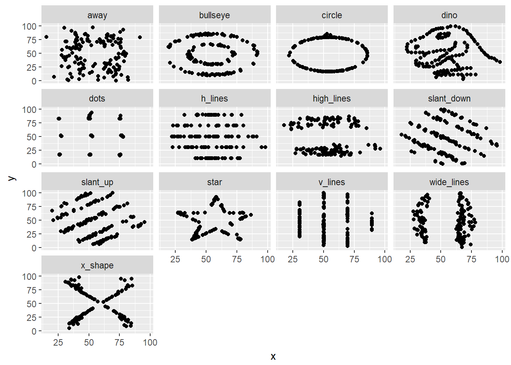

2 Why use R?
R as a programming language is brilliant at it’s core competencies – statistics and data visualisation. It’s also a great “glue” language, by which I mean that you can use it to perform computations in many different languages and combine the results smoothly. As a result, R enables you to be an effective data wrangler, data scientist, and/or data visualisation practitioner.
The following section will show some things uses exemplify how little is required to do things in R, that in other languages or tools can take a substantial amount of time.
These are illustrative only. Don’t worry if they don’t make much sense. Writing code like these examples will be covered in later books.
2.1 Data wrangling
Here’s a common issue I’ve had in the past: working with data from multiple sources, that should usually conform to a template, but don’t. You end up with a whole stack of files that don’t quite match the template, and as a result getting all this data read, combined, and then output somewhere else is often an incredibly difficult task.
This snippet of R code performs the following steps:
- Make functionality from the tidyverse available
- Identify files needing to be read and combined
- Read each file individually, whilst applying a column type enforcement
- Combine the results
Combining the results involves matching the columns by name. It will create new columns when it finds additional columns in some of the data and fill in the data. When columns are missing from a dataset it will put NAs in those column for that data.
library(tidyverse)
# Change '../data' to where your files are. Remove the col_types bit if
# your columns are fairly type safe.
allmydata <- list.files("../data", full.names = TRUE) %>% map_df(read_csv, col_types = cols("c")) %>%
bind_rows()
nrow(allmydata)## [1] 1052.2 Data science
This section is for people with an interest in using R for Data Science. As such it does presume some prior knowledge of Data Science in general. If this section isn’t for you, please skip ahead to the next section.
Part of building models and putting them to use that I’ve always found a bit painful is mapping the pre-processing stages to an operational scenario. Badically, how do I apply my pre-processing steps to new data in order to be able to make a prediction?
If I want to scale numeric variables, I need to keep some sort of record of the mean and standard deviation in the case of a z-score or the minimum and maximum values if I wanted to do a minmax score. Then I’d have to write something to apply these values to new data in an operational setting, or I’d have to transform my model’s formula to apply the scales on the fly.
If I wanted to take it a step further and perform a Principal Component Analysis (PCA) to reduce the amount of features I was working with, I’d have no easy way to do that with the outputs of the R PCA function (princomp()). If I use these principal components in my model, how then to get these for my test data or in production?
This snippet of R code performs the following steps:
- Access and utilise the package,
caret - Split data into training and test samples with the outcome column seperated
- Build a linear regression model on data scaled using z-scores and turned into principal components
- Apply the transformations and linear model to get predictions for test data
Instead of using some of the out-of-the_box methods and writing a really long-winded set of code, I can use functionality from the package caret to add a pre-process step to my model develoment. It will then keep these pre-process steps as part of the model and whenever I use the model to make predictions it will first process the data based on the parameters and transformations used on the training data.
library(caret)
training_data <- mtcars[1:20, -2]
training_outcome <- mtcars[1:20, 2]
test_data <- mtcars[21:32, -2]
test_outcome <- mtcars[21:32, 2]
model <- train(training_data, training_outcome, method = "lm", preProcess = c("scale",
"center", "pca"))
predictions <- predict(model, test_data)2.3 Data visualisation
Data visualisation is an area where R makes it especially difficult to choose just a single example. Instead of showing the many fancy or interactive visualisations you can do in R, I’m instead going to show a part of the workflow.
I’ll often need to make a chart, and then make that chart for a lot of different datasets. These could be datasets for different customers, samples, or time slices.
You can make a chart in R using the package ggplot2 to build a chart of all data.
I’m going to use Dino the Datasaurus and his Data Dozen buddies5 as example data here. Dino and his friends have the same summary statistics but very diffent data distributions. They show why visualising data is so incredibly vital.
The other Dozen were generated using simulated annealing and the process is described in the paper Same Stats, Different Graphs: Generating Datasets with Varied Appearance and Identical Statistics through Simulated Annealing by Justin Matejka and George Fitzmaurice. autodeskresearch.com
In the paper, Justin and George simulate a variety of datasets that have the same summary statistics to the Datasaurus but have very different distributions.
library(ggplot2)
library(datasauRus)
myPlot <- ggplot(datasaurus_dozen, aes(x, y)) + geom_point()
myPlotIf you want to make a small multiples chart, where the charts are produced in a group, you can use the notion of facetting to make many small charts together.
myPlot + facet_wrap(~dataset)
If you wanted to produce and save a chart per dataset you can provide updated data to a chart. This data is also made available within the datasauRus package and illustrates the Simpson’s Paradox6.
myPlot %+% simpsons_paradoxThe original Datasaurus was created by Alberto Cairo. thefunctionalart.com↩
Simpson’s Paradox is the phenomena where high level statistics provide one conclusion but evaluating sub-groups within the data provides a very different conclusion. More information on Simpson’s paradox can be found at vudlab.com↩